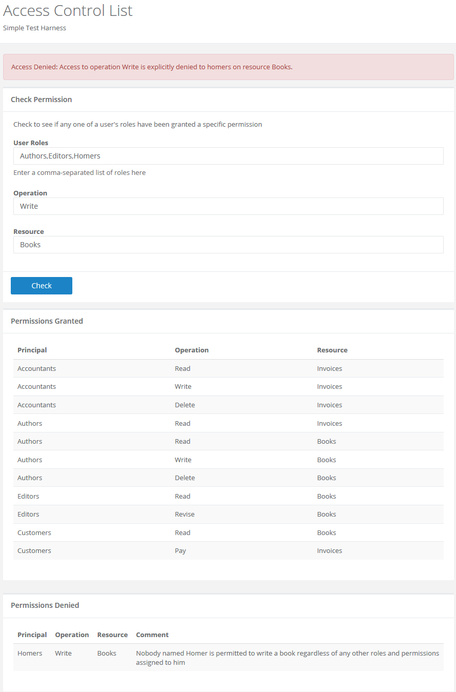

Introduction
Recently I was asked to review the security model in a large legacy system and improve its performance.
The database was big: more than 10,000 users assigned to multiple nested roles with permissions granted (or denied) on more than 120 discrete access-controlled containers holding some 13 million entity records. The permission matrix alone contained more than 1.2 million data points.
As you know, data structure and algorithm design become surprisingly important when you have user interface code and business logic cruising through a million data points regularly and repeatedly for thousands of concurrent users.
The database schema (along with the data model and the object model) was dizzyingly complex, and the code used to implement role-based permissions was... shall we say... less than optimal. Throwing hardware at the problem just wasn't solving anything either.
The application was generating an enormous volume of chatter between the web server and the database server, and response-time on permission checks was only barely acceptable.
And, just to make things interesting, there was a constraint on my work: I could not modify the database schema due to external dependencies outside my control. I could modify only the data access layer and the user interface layer. No schema changes and no data changes whatsoever.
I developed a simple, lightweight, and (as it turns out) lightning-fast solution for role-based access control. I thought I'd share the code here, in case others find it useful in their own solutions to similar problems.
Background
The code makes an important "foundational" assumption, which should be described before we dive into the code. It's deceptively simple: every permission can be modeled as an object with three properties: Principal, Operation, and Resource.
Principals
A Principal is understood to represent the identity of a specific user or group of users.
In a role-based security model a Principal is synonymous with a role, and here it is understood that an individual user may be assigned to multiple roles. It is also understood that the identity of a specific individual might be a role in and of itself. For example, suppose we have three users: Alice, Mad Hatter, and March Hare.
- All three of these users might be assigned to a role named "Mad Tea Party Attendees";
- The Mad Hatter and the March Hare might be assigned to a role named "Harmless Lunatics"; and
- Alice herself might be assigned to a role named simply "Alice".
All of these examples are security Principals.
Resources
A Resource is understood to be a specific entity or container upon which permissions may be applied.
A good analogy is that of a folder in a file system, but it is important to remember that any number of things might be modeled as security Resources. For example, a Resource might be:
- a directory named "Top Secret Missions"; or
- a geographical region named "Western United States"; or
- a form in a user interface named "Employee Details"; or
- a collection of teacups at a "Mad Tea Party" event.
Operations
An Operation is understood to be a specific function that may be performed by a Principal on a Resource.
The simplest and most obvious examples of an Operation are "Read", "Write", and "Delete" on a file or database resource. However, we are not constrained to the obvious here.
- Operations on a Resource named "Teacup" might include "Fill" or "Drop" or "Drink From";
- Operations on a Resource named "Employee Details UI View" might include "Add New", "Edit", and "Delete".
Access Granted
Together, these three properties give us the building blocks to construct permissions that can be read as declarative statements having this form:
Permission to [Operation] is granted to [Principal] on [Resource]
For example:
- Permission to [Read] is granted to [Jacob Morley] on [Large Bank Accounts]
- Permission to [Revise] is granted to [Charles Dickens] on [Oliver Twist Manuscript]
- Permission to [Enter] is denied to [Peter Rabbit] on [Mr. McGregor's Garden]
That last example is important, because it represents a permission that is explicity denied.
Access Denied
A good security model will assume every permission is denied by default, so you might think the last example with Peter Rabbit is redundant and unnecessary. However, there are scenarios in which a security model needs to accommodate rules that look like this.
Suppose you have this permission:
Permission to [Reset] is granted to [Administrators] on [All Servers]
Now suppose you have a user in your organization named Homer Simpson, and he is assigned two roles:
- Administrators
- Homer
Finally, suppose you do not want Homer resetting a server (ever, under any circumstance) regardless of the roles to which he might be assigned (today or in the future). In that case your security model needs the ability to check for an overriding rule that ensures a permission is denied when it might otherwise be granted. You need support for a permission that looks like this:
Permission to [Reset] is denied to [Homer] on [All Servers]
Visually, it looks like this:

In a nutshell, your Acces Control List is the collection of all your permission entities.
The Devil is in the Details
Taking all of the above into consideration, and given an application with a large number of nested Principals, Operations, and Resources, it is easy to get lost in a quagmire of complicated, bloated code that performs terribly. (And, full disclosure here, I am as guilty as anyone for developing a bad solution to a problem like this.)
However, the constraint on this assignment (e.g. No schema changes allowed!) required a very tight focus, and that led to a very tight solution. There's a life lesson in here somewhere, I'm sure...
That's enough preamble though. Let's look at the code.
Using the Code
Keep it Simple
Performance was certainly the highest priority in this solution, but a close second was the requirement to support minimalist calls from client code. A permission check had to look something like this:
// Proceed if the user has read access on resource XYZ
if (acl.IsGranted(user.Roles, "Read", "XYZ"))
Creating and loading an Access Control List (ACL) had to be simple enough that less-experienced developers and system administrators could re-use it. For example:
acl.Grant("Harmless Lunatics", "Attend", "Mad Tea Parties");
To maintain a loose coupling with the rest of the application, the solution needed methods to load an ACL from a DataTable or a CSV text file:
AccessControlListAdapter.Load(acl1, "C:\Files\Permissions.csv");
AccessControlListAdapter.Load(acl2, MySqlDataTable);
The solution also had to support the definition of rules to enforce the denial of permissions that would otherwise be granted:
// Proceed if the user has permission to drink Irish Coffee; minors are denied regardless
acl.Deny("Minors", "Drink", "Irish Coffee");
if (acl.IsGranted(user.Roles, "Drink", "Irish Coffee"))
Access Control Items and Access Control Lists
All of the permission checks in the system could be distilled to a single type of access-control question:
Given that user X is in roles A, B, and C, is he or she granted permission to perform operation Y on resource Z?
This question can be broken down into two parts:
- Is there an operation Y accessible to role A, B, or C?
- If so, has it been granted on resource Z?
Expressed this way, it becomes clear that both parts of the problem can be solved using high-performance hash tables. The generic Dictionary class is a specific type of hash table used to represent a collection of keys and values, and it's perfectly suited to answering both parts of our generic access-control question.
AccessControlItem: First Draft
Here is the first draft of a simple AccessControlItem class to handle answering the first part of our access-control question:
public class AccessControlItem
{
// Store a collection of principals for each operation
private readonly Dictionary<string, StringCollection> _principals;
public AccessControlItem() { _principals = new Dictionary<string, StringCollection>(); }
public void Grant(string principal, string operation)
{
// Get the collection of principals who can perform the operation
StringCollection value;
if (!_principals.ContainsKey(operation))
{
value = new StringCollection();
_principals.Add(operation, value);
}
else
{
value = _principals[operation];
}
// Ensure the principal can perform the specified operation
if (!value.Contains(principal))
value.Add(principal);
}
// Return true if any one of the principals can perform the operation.
public bool IsGranted(string[] principals, string operation)
{
var value = !_principals.ContainsKey(operation) ? null : _principals[operation];
return value != null && principals.Any(principal => value.Contains(principal));
}
}
AccessControlList: First Draft
And here the first draf of a simple AccessControlList class to handle answering the second part of our access-control question:
public class AccessControlList : IAccessControlList
{
// Store an item for each resource
private readonly Dictionary<string, AccessControlItem> _operations;
public AccessControlList() { _operations = new Dictionary<string, AccessControlItem>(); }
public void Grant(string principal, string operation, string resource)
{
// Get the item for the resource
AccessControlItem value;
if (!_operations.ContainsKey(resource))
{
value = new AccessControlItem();
_operations.Add(resource, value);
}
else
{
value = _operations[resource];
}
// Grant the specified operation to the principal
value.Grant(principal, operation);
}
// Return true if any one of the principals has been granted the operation on the resource
public bool IsGranted(string[] principals, string operation, string resource)
{
var value = !_operations.ContainsKey(resource) ? null : _operations[resource];
return value != null && value.IsGranted(principals, operation);
}
}
This is a surprisingy simple solution without a lot of code, and it runs extremely fast. In my test environment, an ACL with 1,000 resources, 10 operations per resource, and 100 principals per operation, produced a permission matrix with 1 million data points, and arbitrary calls on AccessControlList::IsGranted consistently return a result in less than 2 milliseconds.
Of course, the code samples above are not yet production-ready. Among other things, we need to include checks for null key values, and we need to deal with case-sensitivity on lookups. Also, we have not yet incorporated a feature to check for overriding Access Denied permission rules.
The simplified ACL class above can be used to to handle Access Granted and Access Denied permission rules, so in the end I renamed AccessControlItem and AccessControlList to BaseControlItem and BaseControlList, and I used these to create a more full-featured implementation.
AccessControlList: Final Draft
A complete demo can be found in the source code attached to this article. The finished ACL class looks like this:
/// <summary>
/// This class provides a basic implementation for the required ACL interface.
/// </summary>
public class AccessControlList : IAccessControlList
{
// We can use the same base control class for permissions granted and denied.
private readonly BaseControlList _granted;
private readonly BaseControlList _denied;
/// <summary>
/// Disallow null ACLs.
/// </summary>
public AccessControlList()
{
_granted = new BaseControlList();
_denied = new BaseControlList();
}
/// <summary>
/// Explain why the operation is granted or denied on the resource, given a collection of principals.
/// </summary>
public string Explain(string[] principals, string operation, string resource)
{
// Check for an overriding denial.
if (_denied.IsIncluded(principals, operation, resource))
{
var included = _denied.FindIncludedPrincipals(principals, operation, resource);
return string.Format("Access to operation {1} is explicitly denied to {0} on resource {2}."
, included, operation, resource);
}
// Grant access only if there is a matching access control entry.
if (_granted.IsIncluded(principals, operation, resource))
{
var included = _granted.FindIncludedPrincipals(principals, operation, resource);
return string.Format("Access to operation {1} is granted to {0} on resource {2}."
, included, operation, resource);
} ;
// Assume every permission is denied by default.
return "Permission is not granted to any of the user roles specified.";
}
/// <summary>
/// Return true if any one of the principals is granted the operation on the resource.
/// </summary>
public bool IsGranted(string[] principals, string operation, string resource)
{
// Assume every permission is denied by default.
bool result = false;
// Check for an overriding denial.
if (!_denied.IsIncluded(principals, operation, resource))
{
// Grant access only if there is an explicit access control rule.
if (_granted.IsIncluded(principals, operation, resource))
result = true;
}
OnGrantChecked(operation, resource, result);
return result;
}
/// <summary>
/// Add a permission to the ACL.
/// </summary>
public void Grant(string principal, string operation, string resource)
{
_granted.Include(principal,operation,resource);
}
/// <summary>
/// Remove a permission from the ACL.
/// </summary>
public void Revoke(string principal, string operation, string resource)
{
_granted.Exclude(principal, operation, resource);
}
/// <summary>
/// Return true if any one of the principals is explicitly denied the operation on the resource.
/// </summary>
public bool IsDenied(string[] principals, string operation, string resource)
{
return _denied.IsIncluded(principals, operation, resource);
}
/// <summary>
/// Add an overriding permission denial to the ACL.
/// </summary>
public void Deny(string principal, string operation, string resource)
{
_denied.Include(principal, operation, resource);
}
#region Events and Delegates
/// <summary>
/// An observer might want to monitor ACL lookups and track results for security auditing.
/// </summary>
public delegate void GrantCheckHandler(string operation, string resource, bool result);
public event GrantCheckHandler GrantCheck;
protected virtual void OnGrantChecked(string operation, string resource, bool result)
{
var handler = GrantCheck;
if (handler != null) handler(operation, resource, result);
}
#endregion
}
How Fast Is It, Really?
The demo source code includes a unit test to measure the performance of random permission checks, invoking the IsGranted method on a large instance of the access control list class. The unit test looks like this:
[Test]
public static void IsGranted_AcceptablePerformance_Success()
{
var acl = CreateMassiveAcl();
var results = new StringBuilder();
results.AppendLine("TestNumber,Principal,Operation,Resource,Granted,Milliseconds");
// Run 5000 tests for permissions granted or denied.
var random = new Random();
for (var i = 0; i < 5000; i++)
{
var randomPrincipal = CreateRandomName(random, "Principal", 1, (int)(1.5 * PrincipalCount));
var randomOperation = CreateRandomName(random, "Operation", 1, (int)(1.5 * OperationCount));
var randomResource = CreateRandomName(random, "Resource", 1, (int)(1.5 * ResourceCount));
var watch = Stopwatch.StartNew();
bool isGranted = acl.IsIncluded(new[] {randomPrincipal}, randomOperation, randomResource);
watch.Stop();
Assert.LessOrEqual(watch.Elapsed.TotalMilliseconds, ExpectedResponseTime);
results.AppendFormat("{0},{1},{2},{3},{4},{5}"
, i + 1
, randomPrincipal
, randomOperation
, randomResource
, isGranted ? "Y" : "N"
, watch.Elapsed.TotalMilliseconds);
results.AppendLine();
}
// Write the results to a file for analysis.
const string physicalPath = @"C:\Temp\Performance-Results.csv";
if (Directory.Exists(Path.GetDirectoryName(physicalPath)))
File.WriteAllText(physicalPath, results.ToString());
}
I generated an access control list with 100 principals, 10 operations, and 10,000 resources to produce a permission matrix with 10 million data points (all permutations of Principal, Operation, and Resource). An Excel spreadsheet showing these results is included in the source code attached to this article.
Here is a summary:
- Number of ACL tuples = 10,000,000
- Number of test iterations = 5,000
- Average response time per iteration = 0.0017 ms
- Best response time = 0.0003 ms
- Worst response time = 0.6748 ms
- Standard deviation = 0.0105 ms
In other words, on average, this ACL is capable of handling 583,036 queries per second, and my performance tests showed little to no degradation when the size of the data set was doubled.
The exact speed of a bolt of lightning depends on atmospheric conditions, but on average it's about 3,700 miles per second. I'll let you judge whether or not the performance of this solution is a fair comparison. :)
Integrating the Solution
The constant chatter between the web server and the database server for permission checks was virtually eliminated by loading the ACL into ApplicationState. User accounts and user/role assignments were subject to frequent changes in the source system, but Principals, Operations, and Resources were relatively static. Even so, it was relatively easy to reload the ACL and refresh ApplicationState when modifications occurred on Principal, Operation, and Resource entities.
// Added to Global.asax:
public static bool IsAccessGranted(string[] userRoles, string operation, string resource)
{
var state = HttpContext.Current.Application;
if (state["AccessControlList"] == null)
state["AccessControlList"] = GetAclTableFromSourceSystem();
var acl = (IAccessControlList)state["AccessControlList"];
return acl.IsGranted(userRoles, operation, resource);
}
private static IAccessControlList GetAclTableFromSourceSystem()
{
// You'll need to look after this with your own data source.
return new AccessControlList();
}
// This enables simple, readable permission checks throughout the application:
// if (Global.IsAccessGranted(CurrentUser.Roles, someOperation, someResource)) // proceed!
Improving the Solution
The solution turned out well, but there is still a lot of room for improvement. Here are a few ideas:
- Create a struct value type for individual access control items, so that {Principal, Operation, Resource} tuples can be encapsulated into individual objects.
- If the Operations in your system are entirely static then create an enumeration type to represent them, and replace the String data type on all references to Operation variables and parameters. The same may be true of Resources in your system.
- Replace string arrays with the CommaDelimitedStringCollection data type, if you find the resulting code easier to read and maintain. I was surprised to discover this class in the System.Configuration namespace by accident while working on this project.
- Instead of storing Principals as string values in a StringCollection, store references to a central "master list" of principals, so you aren't storing multiple copies of the same value in multiple collections.
- Define and describe a clean and compact SQL database schema for the back end. This will be helpful on new implementations where we aren't constrained by an existing legacy schema.
- This solution lends itself very well to the possibility of introducing a Domain-Specific Language, which could lead to an entire project (and series of articles) by itself!
If you have other ideas to improve the solution then please let me know - I'd be interested to hear your feedback.
Points of Interest
Hashtables and Dictionaries
The generic Dictionary<TKey,TValue> class was introduced to the .NET Framework in version 2.0 as a replacement for the Hashtable class. The Dictionary class is widely reported to be faster than the Hashtable class, although I have read some arguments that the performance difference is negligible. I have not (yet) run my own benchmarks to measure and compare performance results, but here are two articles on the topic for reference:
Test Harness via ASP.NET Web Form
I created a simple ASP.NET Web Forms application to use as a test harness for troubleshooting the code.
It is also useful for answering questions (and troubleshooting idiosyncracies) in your access control list data. If you have a large ACL with users assigned to many different roles, when a specific permission check returns true (or false), you might want to know exactly why.
For example, if Alice is assigned to three different roles (Pilots, Mechanics, and Ground Crew) and an ACL check returns true for a specific operation and resource, you might not know from memory which of those three roles has been granted that access. The test harness is designed to help answer this type of question.
Here is a quick look:

History
November 18, 2015: First draft.
November 19, 2015: Second draft. Fixed minor typos; added ERD to Background; attached updated demo source